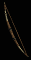
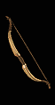
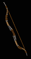

(Short Bow)
(Edge Bow)
(Spider Bow)

(Hunter's Bow)
(Razor Bow)
(Blade Bow)

(Long Bow)
(Cedar Bow)
(Shadow Bow)

(Composite Bow)
(Double Bow)
(Great Bow)

(Short Battle Bow)
(Short Siege Bow)
(Diamond Bow)

(Long Battle Bow)
(Large Siege Bow)
(Crusader Bow)

(Short War Bow)
(Rune Bow)
(Ward Bow)

(Long War Bow)
(Gothic Bow)
(Hydra Bow)